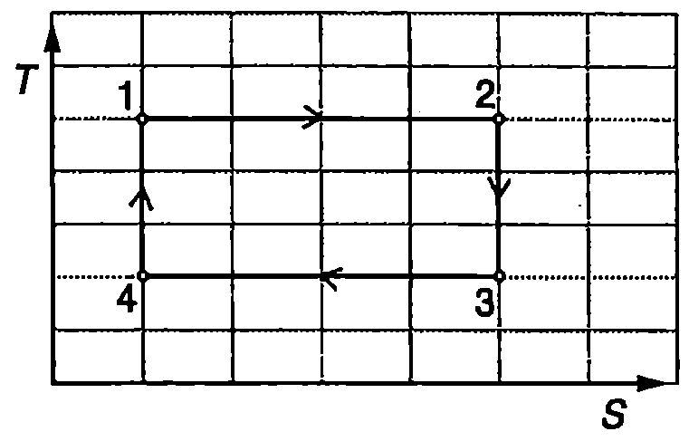

Приведена топлина
От уравнения \eqref{eq:36.3} и \eqref{eq:36.5} за КПД на цикъла на Карно записваме:
Следователно
При анализа на цикъла на Карно за по-голяма нагледност разглеждахме обменените за един цикъл количества топлина и като величини, които имат само положителни стойности. При прилагането на първия принцип на термодинамиката за дадена термодинамична система обаче количеството топлина се разглежда като алгебрична величина, която има положителна стойност (), когато системата приема топлина от околната среда, и отрицателна стойност (), когато системата отдава топлина на околната среда. По-нататък ще разглеждаме количеството топлина като алгебрична величина, която може да има както положителни, така и отрицателни стойности. Тогава равенство \eqref{eq:37.1} се записва във вида
където , a .
Отношението на полученото (или отдаденото) количество топлина при изотермен процес към температурата , при която протича процесът, се нарича приведено количество топлина. Формула \eqref{eq:37.2} показва, че сумата от приведените количества топлина за цикъла на Карно е равна на нула.

`Фиг. 37.1`
Двете изотерми в цикъла на Карно можем да разглеждаме като два от възможните изотермни преходи между състояния на термодинамичната система, които лежат на две различни адиабати. На Фиг. \ref{fig:37.1} са показани няколко от възможните изотермни прехода от едната адиабата на другата. Всеки от тези преходи се извършва при различна температура и при него системата обменя различно количество топлина. Ще докажем обаче, че приведените топлини, характеризиращи всички изотермни процеси, свързващи двете адиабати, са еднакви. Действително, от всяка двойка от изотермите и от двете адиабати може да се състави цикъл на Карно. Да разгледаме например цикъла (Фиг. \ref{fig:37.1}). При изотермното разширение системата получава количество топлина при температура . При изотермното свиване тя отдава на околната среда количество топлина при температура ( е количеството топлина, което системата получава при изотермното разширение ). Съгласно с уравнение \eqref{eq:37.2}
Тъй като двете изотерми бяха взети произволно, следва изводът, че приведените количества топлина при всички изотермни преходи от една адиабата на друга адиабата са равни.
Нека сега разгледаме два произволни равновесни процеса и , чрез които една термодинамична система преминава от някакво равновесно състояние а в друго равновесно състояние в (Фиг. \ref{fig:37.2}). Ще докажем, че сумите от приведените топлини за двата процеса са еднакви. На -диаграмата пресичаме графиките на двата процеса с гъста мрежа от адиабати, крайните две от които преминават през точките и (Фиг. \ref{fig:37.2}). Заменяме процесите А и В с редуващи се изотермни и адиабатни процеси, които се представят с начупените линии от Фиг. \ref{fig:37.2}. Приведените топлини при изотермните преходи между две съседни адиабати са равни:
Тъй като при адиабатните процеси не се извършва топлообмен, сумата от приведените топлини за двете последователности от изотермни и адиабатни процеси, с които сме заменили процесите А и В, са равни:
На Фиг. \ref{fig:37.2} броят на адиабатите е само пет. Затова последователността от изотермни и адиабатни процеси твърде грубо апроксимира дадените процеси А и В. Ако обаче увеличаваме броя на адиабатите и изотермите, начупената линия ще се доближава все по-близо до кривите, представящи двата процеса, и в граничния случай на безкраен брой стъпки ще се слее с тези криви. Следователно всеки равновесен термодинамичен процес може да се представи като последователност от редуващи се елементарни адиабатни и изотермни процеси и да се характеризира със сумата от приведените топлини при елементарните изотермни процеси. Тогава равенството \eqref{eq:37.3} се записва във вида
\begin{center} за процес А за процес В \end{center}

`Фиг. 37.2`
Уравнение \eqref{eq:37.4} показва, че сумата от приведените топлини не зависи от вида на процеса, а единствено от началното и от крайното състояние на системата.
Ентропията като функция на състоянието
От механиката знаем, че работата на консервативна сила не зависи от пътя, а единствено от началното състояние и от крайното състояние на механичната система от материални точки. Този факт дава възможност състоянието на механичната система да се характеризира с една функция от координатите на материалните точки, наречена потенциална енергия . По определение изменението на потенциалната енергия е равно на взетата с обратен знак работа на консервативните сили
По подобен начин германският физик Рудолф Клаузиус (1822-1888), като използва получения от него резултат, че сумата от приведените топлини не зависи от вида на равновесния процес, а се определя единствено от началното и от крайното състояние на термодинамичната система, въвежда една нова функция на състоянието, която нарича ентропия. По определение
изменението на ентропията на равновесна термодинамична система при преминаване от дадено състояние в друго състояние е равно на сумата от приведените топлини, които системата обменя с околната среда при извършването на този преход чрез произволен равновесен процес:
Диференциалът на функцията съгласно с уравнение \eqref{eq:37.5} е
За равновесен адиабатен процес и съгласно с уравнение \eqref{eq:37.6} , т.е. . Следователно равновесните адиабатни процеси са изоентропийни процеси - при тях ентропията на термодинамичната система не се изменя.
Теорема на Нернст
Германският физикохимик Валтер Нернст (1864-1941) обобщава експерименталните изследвания на различни вещества при ниски температури и през 1906 г. формулира следната теорема:
При приближаване на равновесна термодинамична система към абсолютната нула (0 К), нейната ентропия престава да зависи от термодинамичните параметри на системата и клони към еднаква за всички термодинамични системи стойност, която може да се приеме за равна на нула ( при К).
От теоремата на Нернст непосредствено следва, че никое тяло не може да бъде охладено до абсолютната нула. Действително, всеки равновесен процес на охлаждане може да се представи като последователност от елементарни процеси на адиабатно разширение и изотермно свиване. При адиабатното разширение температурата се понижава, а при изотермното свиване от тялото се отнема количество топлина и ентропията му намалява с (). Тъй като съгласно с теоремата на Нернст, когато абсолютната температура клони към нула (), ентропията престава да се изменя (), то при изотермното свиване от тялото престава да се отнема количество топлина (). Казано по друг начин, при изчезва разликата между изотермните и адиабатните процеси. При наближаване на абсолютната нула работата, която извършва тялото при адиабатното си разширение, започва да клони към работата на външните сили при следващото го изотермно свиване и вътрешната енергия и температурата на тялото започват все по бавно да намаляват. Затова чрез подобна последователност от адиабатни и изотермни процеси е възможно тялото само асимптотично да се приближава към абсолютната нула, без да я достига.
Често теоремата на Нернст се формулира като трети принцип на термодинамиката или като принцип за недостижимостта на абсолютната нула.
Основно уравнение на термодинамиката
Записваме уравнението на първия принцип на термодинамиката (вж. уравнение \eqref{eq:30.9} на стр.165) във вида където (вж. стр. 169) е изменението на вътрешната енергия. Изразяваме елементарното количество топлина чрез диференциала на ентропията от уравнение \eqref{eq:37.6}: . Получаваме
Уравнение \eqref{eq:37.7} се нарича основно уравнение на термодинамиката за проста система с един външен параметър. То обединява уравнението \eqref{eq:30.9} на първия принцип на термодинамиката и уравнението \eqref{eq:37.6}, чрез което се дефинира величината ентропия.
Пример 37.1
mol идеален газ се намира в равновесното състояние , в което заема обем при температура . Газът извършва равновесен процес и преминава в състояние , в което има обем и температура . Определете изменението на ентропията на газа при този процес. Изохорният моларен топлинен капацитет на газа е . \end{psexample}
Решение
Изменението на ентропията не зависи от вида на процеса, а се определя единствено от началното и от крайното състояние на идеалния газ. От уравнението за състоянието на идеалния газ изразяваме налягането и го заместваме в основното уравнение на термодинамиката \eqref{eq:37.7}. За диференциала на ентропията получаваме
Изменението на ентропията на газа при преминаването от състояние в състояние чрез равновесен процес е
Задачи
-
При равновесен изотермен процес термодинамична система получава от околната среда 4 kJ количество топлина и ентропията на системата нараства с 20 J/К. При каква температура е протекъл процесът?
-
Идеален газ се разширява изотермно при температура 300 К. Колко е изменението на ентропията на газа, ако при разширението газът е извършил 3 kJ работа?

`Фиг. 37.3`
3. При представянето на термодинамичния цикъл от Фиг. \ref{fig:37.3} е използвана -диаграма (по абсцисната ос е нанесена ентропията , а по ординатната ос абсолютната температура ). Опишете всеки от четирите процеса, включени в цикъла. Представете същия цикъл на -диаграма. Как се нарича този цикъл?
-
mol идеален газ се разширява изотермно, при което обемът на газа нараства 2 пъти. Определете изменението на ентропията на газа.
-
Два мола едноатомен идеален газ се нагряват при постоянен обем от температура 200 К до температура 400 К. Пресметнете изменението на ентропията на газа.
-
Пресметнете изменението на ентропията на 1 mol хелий (едноатомен газ), който се охлажда при атмосферно налягане ( Pa) от стайна температура (300 К) до температура 10 К.
-
В цилиндър с бутало се намират mol хелий. Отначало газът се разширява адиабатно и обемът му нараства 2 пъти, а след това се свива изобарно, докато достигне първоначалния си обем. Определете изменението на ентропията при този процес.
-
Пресметнете изменението на ентропията на 3 mol идеален газ с коефициент на Поасон при равновесен процес, в резултат на който налягането на газа е нараснало 2 пъти, а обемът е намалял 4 пъти.
-
В цилиндър с бутало се намират 2 mol аргон (едноатомен идеален газ). Газът извършва равновесен процес на разширение, при който налягането на газа нараства правопропорционално на неговия обем (, където е константа). Определете изменението на ентропията на газа, когато обемът му нарасне 2 пъти.